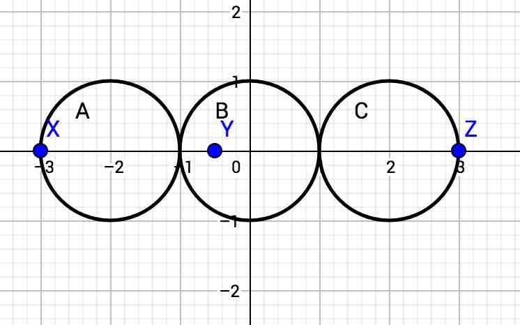
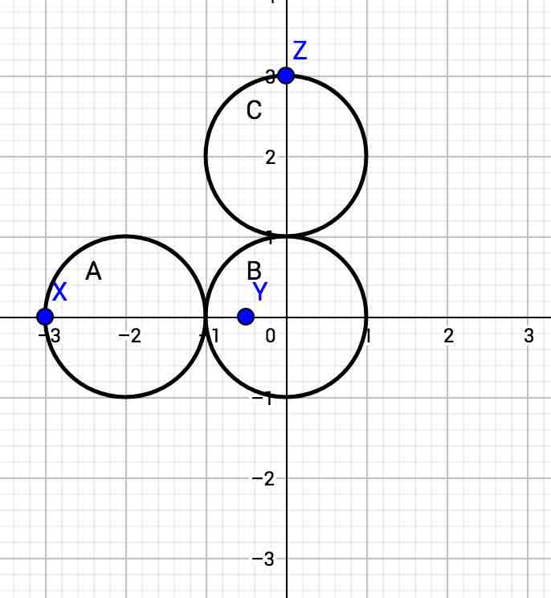
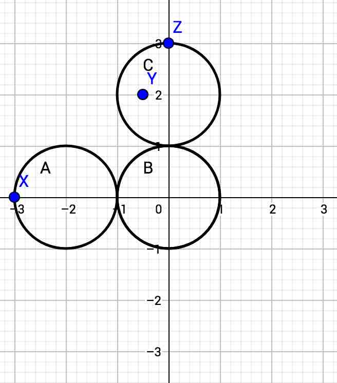

In the Small dataset, all three black holes are along the x-axis, so the solution is simple: the three spheres should be placed in a row (touching only at single points) to cover the distance spanned by the leftmost and rightmost of the black holes. So the answer is just the distance between leftmost and rightmost black holes, divided by 6.
To solve the Large dataset, it is helpful to notice that although this is a 3-D problem, it only has three points (black holes), and there is at least one plane that contains all three of the points. It is therefore possible to simplify the problem into a 2-D problem: how can we use three connected circles of equal radius to cover three points on a plane?
Suppose that we have Circles A, B, and C, with circle A connected to circle B, circle B connected to circle C, and circles A and C possibly (but not necessarily) connected. Then these are the only two potentially optimal ways to cover the points:
Type I: Each point is in a different circle. 
Type II: Two points are in circle A, and a third point is in circle C. 
If we call the points X, Y, and Z, then there are three Type I possibilities and three Type II possibilities. For example, one possibility for Type I is to have Point X in Circle A, Point Y in Circle B, and Point Z in Circle C. One possibility for Type II is to have Points Y and Z in Circle A, and Point X in Circle C.
Any other arrangement cannot be optimal. For instance, if all three points are in one circle, we are wasting the other two circles. If two points are in one circle and one point is in another circle, and the third circle does not connect the first two, then we could make the circles smaller and use the third to connect the first two.
To find the minimum valid radius for a possible configuration, we can use binary search. But we still need a way to determine whether a radius is valid.
For Type I possibilities, how can we determine whether a radius R is valid? Let K be the center of circle B. Then:
It is equivalent to check that point K is in all three of these circles:
So, if those three circles have any common intersection, then we know that radius R is valid, without having to choose a specific point K.
We can use a similar strategy for Type II possibilities. Let K be the center of circle A. Then:
and so we only need to look for a common intersection of these three circles:
To determine whether the three circles have at least one point in common, we can start by finding the intersections of the perimeters of each pair of circles. If two circles' perimeters intersect at...
If none of these checks succeed, then the three circles have no point in common. Otherwise, they have at least one.
Once we have found the minimum radius for each cover method, the minimum of those is our final answer.